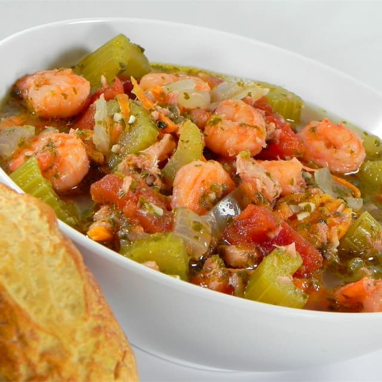

Seafood Stew

Description:
Nice hearty seafood stew, perfect for those cold winter days. Served with sliced French bread.
Ingredients:
- 1/4 cup olive oil
- 4 stalks celery
- 1/2 onion, diced
- 3 carrots, diced
- 3 cloves garlic, diced
- 1 (14 ounce) can stewed tomatoes
- 2 1/2 cups water
- 1 cup white wine
- 1 (8 ounce) bottle clam juice
- 1/4 cup sherry
- 2 cubes chicken bouillon
- 1/2 teaspoon red pepper flakes
- salt and pepper to taste
- 1/2 bunch cilantro
- 1/2 pound medium shrimp - peeled and deveined
- 1/2 pound white fish, cut into small chunks
Steps:
- Heat the oil in a large pot over medium heat. Mix in the celery, onion, carrots, and garlic. Cook and stir until onion is tender. Stir in the tomatoes, water, wine, clam juice, and sherry. Dissolve bouillon cubes in the stew, and season with red pepper, salt, and pepper. Bring to a boil, reduce heat to low, and simmer 1 hour.
- Mix the cilantro, shrimp, and fish into the stew. Continue cooking 5 minutes, or until shrimp is opaque and fish is easily flaked. Remove from heat, and allow to sit 10 minutes before serving.